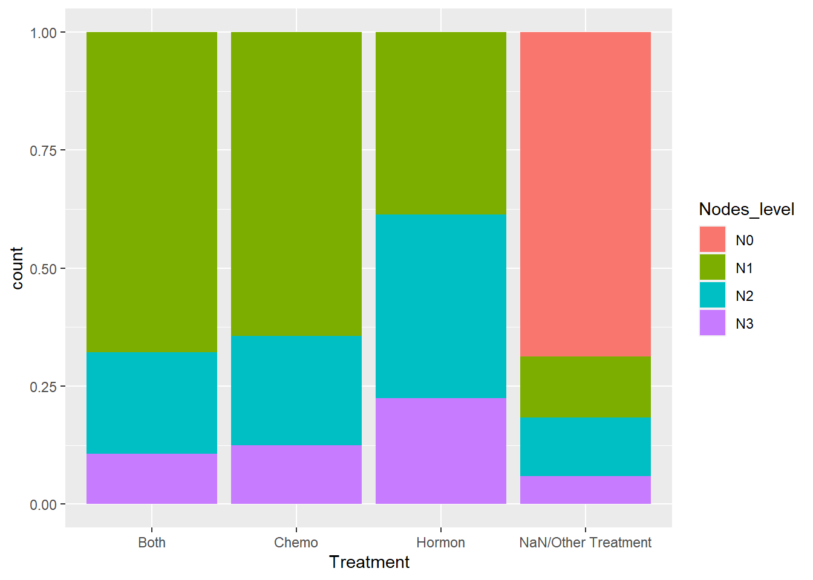
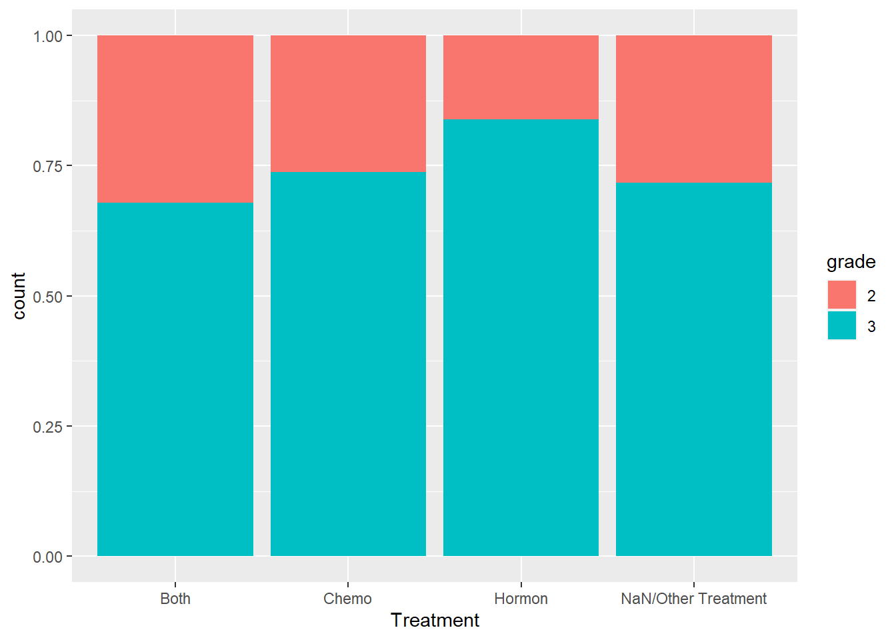

# The Cox-Snell function takes as inputs
# 1. A vector of Cox-Snell residuals created by the user based on the model being evaluated,
# 2. A status vector
# 3. Optional x- and y- limits for the resulting plot
CoxSnell = function(cs,status,xlim=NULL,ylim=NULL)
{
kmcs = survfit(Surv(jitter(cs,amount=(max(cs)-min(cs))/1000),status) ~ 1)$surv
plot(log(-log(kmcs)) ~ sort(log(cs)) ,
xlab="log(Cox-Snell)", ylab="log(-log(S(Cox-Snell)))", xlim=xlim, ylim=ylim )
abline(0,1,col='red')
}Log-normal model:
Dlnorm <- survreg(Surv(dtime, death) ~ Treatment + size + nodes + age , dist='lognormal', data=rotterdam)
Dlnorm## Call:
## survreg(formula = Surv(dtime, death) ~ Treatment + size + nodes +
## age, data = rotterdam, dist = "lognormal")
##
## Coefficients:
## (Intercept) TreatmentChemo
## 9.709442268 -0.431016329
## TreatmentHormon TreatmentNaN/Other Treatment
## -0.346351742 -0.423626557
## size20-50 size>50
## -0.372703559 -0.654189313
## nodes age
## -0.079103425 -0.009903862
##
## Scale= 1.077329
##
## Loglik(model)= -12034.1 Loglik(intercept only)= -12286.5
## Chisq= 504.67 on 7 degrees of freedom, p= <2e-16
## n= 2982CS_Death <- -log(1 - plnorm(rotterdam$dtime, 9.709442268-0.431016329*(rotterdam$Treatment=="Chemo")
-0.346351742*(rotterdam$Treatment=="Hormon")
-0.423626557*(rotterdam$Treatment=="NaN/Other Treatment")
-0.372703559*(rotterdam$size=="20-50")
-0.654189313*(rotterdam$size==">50")
-0.079103425*rotterdam$nodes
-0.009903862*rotterdam$age,
1.077329))
# Make appropriate graph using CoxSnell function
CoxSnell(CS_Death, rotterdam$death)
Rlnorm <- survreg(Surv(rtime, recur) ~ Treatment + size + nodes + age, dist='lognormal', data=rotterdam)
Rlnorm## Call:
## survreg(formula = Surv(rtime, recur) ~ Treatment + size + nodes +
## age, data = rotterdam, dist = "lognormal")
##
## Coefficients:
## (Intercept) TreatmentChemo
## 8.514204484 -0.382172447
## TreatmentHormon TreatmentNaN/Other Treatment
## -0.479063703 -0.605193863
## size20-50 size>50
## -0.458345796 -0.738657689
## nodes age
## -0.107708963 0.009059467
##
## Scale= 1.340545
##
## Loglik(model)= -13803.8 Loglik(intercept only)= -14045.8
## Chisq= 483.94 on 7 degrees of freedom, p= <2e-16
## n= 2982CS_Recur <- -log(1 - plnorm(rotterdam$rtime, 8.514204484-0.382172447*(rotterdam$Treatment=="Chemo")
-0.479063703*(rotterdam$Treatment=="Hormon")
-0.605193863*(rotterdam$Treatment=="NaN/Other Treatment")
-0.458345796*(rotterdam$size=="20-50")
-0.738657689*(rotterdam$size==">50")
-0.107708963*rotterdam$nodes
+0.009059467*rotterdam$age,
1.340545))
# Make appropriate graph using CoxSnell function
CoxSnell(CS_Recur, rotterdam$recur)